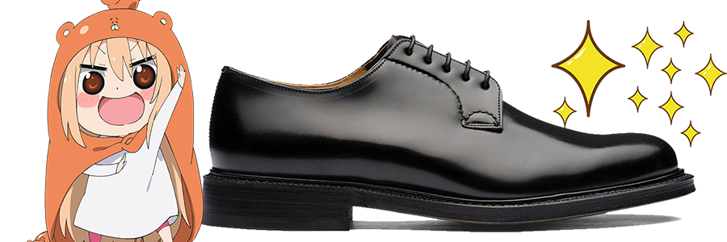
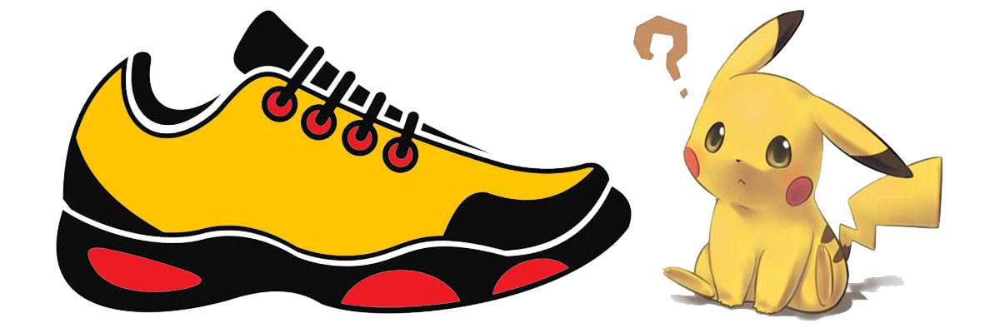

¿TE INTERESA MEJORAR EL MEDIO AMBIENTE?
Diciembre 10,2021

Que un zapato sea sostenible depende de muchos factores: el material del que está hecho, el proceso de fabricación, los materiales con los que se empaquetan, el tratamiento de los residuos y las condiciones sociales de los trabajadores que los fabrican.
Como Funciona
Diciembre 10,2021

Tenemos calzado para todos!
Grandes marcas!
NUESTRAS REDES!


Contact Info
Telefono: 5566675430
Encargado: Diego S.A
E-mail: DiegoSA@gmail.com
CONTACTANOS PAGINA
No Contaminan
A la hora de fabricar el calzado ecológico, el proceso debe ser respetuoso con el medio ambiente: debe producirse una mínima explotación de los recursos naturales y reducir al máximo la emisión de CO2 o partículas contaminantes a la atmósfera.
Lo ideal es que todos los desechos de su fabricación se puedan reciclar. Además, las condiciones laborales de las personas que fabrican los zapatos deben ser éticas y responsables socialmente.
No te engañamos
En el mercado encontramos diferentes marcas que apuestan por el calzado ecológico produciendo zapatillas, sandalias y botas de lo más cool (lo ecológico no está reñido con lo bonito).
Algunos ejemplos son Nagore, una de las firmas más veteranas y cuyas sandalias artesanales se venden en Menorca y Barcelona; Slowers, una marca que apuesta por las alpargatas artesanales hechas localmente con algodón orgánico; la neoyorquina OlsenHaus, con productos 100% veganos y cuyos materiales provienen de las plantas o Pla Shoes, unos curiosos zapatos hechos con una sola trenza de yute. seguir leyendo...